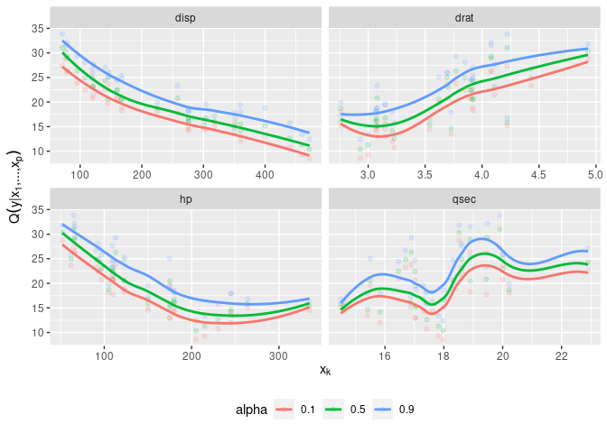

An R package for D-vine copula based mean and quantile regression.
How to install
-
the stable release from CRAN:
install.packages("vinereg") -
the latest development version:
# install.packages("devtools") devtools::install_github("tnagler/vinereg", build_vignettes = TRUE)
Functionality
See the package website.
Example
set.seed(5)
library(vinereg)
data(mtcars)
# declare factors and discrete variables
for (var in c("cyl", "vs", "gear", "carb"))
mtcars[[var]] <- as.ordered(mtcars[[var]])
mtcars[["am"]] <- as.factor(mtcars[["am"]])
# fit model
(fit <- vinereg(mpg ~ ., data = mtcars))
#> D-vine regression model: mpg | disp, hp, gear, carb, cyl, am.1, wt, vs, qsec, drat
#> nobs = 32, edf = 95, cll = -56.09, caic = 302.19, cbic = 441.43
summary(fit)
#> var edf cll caic cbic p_value
#> 1 mpg 3.2e-11 -98.59271949 197.185439 197.185439 NA
#> 2 disp 2.0e+00 29.53428159 -55.068563 -52.137091 1.490817e-13
#> 3 hp 3.0e+00 2.33231128 1.335377 5.732585 1.980680e-01
#> 4 gear 5.0e+00 2.16379135 5.672417 13.001097 5.032781e-01
#> 5 carb 7.0e+00 2.25660680 9.486786 19.746938 7.191256e-01
#> 6 cyl 9.0e+00 1.57180668 14.856387 28.048010 9.583277e-01
#> 7 am.1 1.0e+01 1.75053838 16.498923 31.156282 9.670618e-01
#> 8 wt 1.3e+01 1.62670653 22.746587 41.801154 9.968551e-01
#> 9 vs 1.3e+01 0.52962788 24.940744 43.995311 9.999946e-01
#> 10 qsec 1.6e+01 0.70439591 30.591208 54.042983 9.999992e-01
#> 11 drat 1.7e+01 0.02890435 33.942191 58.859702 1.000000e+00
# show marginal effects for all selected variables
plot_effects(fit)
#> `geom_smooth()` using method = 'loess' and formula 'y ~ x'
# predict mean and median
head(predict(fit, mtcars, alpha = c(NA, 0.5)), 4)
#> mean 0.5
#> 1 19.34844 19.36137
#> 2 19.17643 19.19813
#> 3 25.28055 25.13934
#> 4 19.70849 19.67788